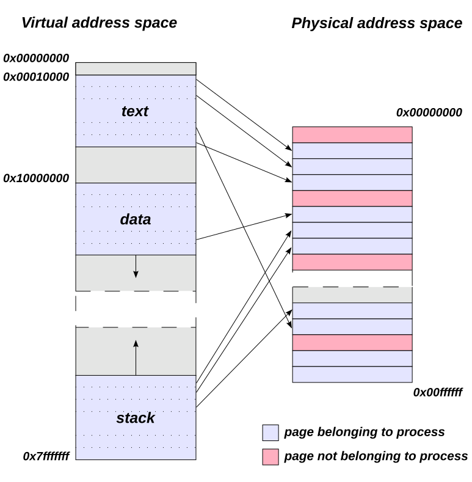

External libraries
External libraries
- External libraries extend C’s capabilities — especially useful in scientific computing (e.g., linear algebra, FFT, plotting).
- Common scientific libraries:
- GSL (GNU Scientific Library)
- BLAS/LAPACK (Linear Algebra)
- FFTW (Fast Fourier Transforms)
- HDF5 (Hierarchical data format)
- Benefits:
- Avoid reinventing the wheel
- Leverage optimized, tested code
- Improve performance and portability
Static vs Dynamic Libraries
| Feature | Static Library (.a/.lib) | Dynamic Library (.so/.dll) |
|---|---|---|
| Linking time | Compile time | Runtime |
| Binary size | Larger (library included) | Smaller (library separate) |
| Portability | Easier to distribute | Requires library on target system |
| Updates | Recompile to update | Can update without recompiling |
| Performance | Slightly faster (no indirection) | May have overhead at runtime |
Use
gcc -staticfor static linking, or-l<libname>with-L<path>for dynamic linking. Details differ from library to library: check the documentation
GNU Scientific Library
- The GNU Scientific Library (GSL) provides a wide range of mathematical routines
- How to get it:
- On the cluster: load it as a module,
module load GSL/2.8-GCC-13.3.0for example - On your machine: install it as a system package,
apt-get install libgsl-devfor example
- On the cluster: load it as a module,
- How to use it:
- Include the relevant headers in your code
- Find relevant link flags with
pkg-config --libs gslfor example
Minimizing a function with GSL
double f(double x, void *params) {
Params *p = (Params *) params;
return exp(-p->sigma*x*x)*sin(p->a + p->b*x);
}
typedef struct {
double a, b, sigma;
} Params;
Params params = {0.3, 1.0, 0.05};double minimum = -1.0, lower = -3.0, upper = 0.0;
int iter = 0, maxIter = 100, status;
const gsl_min_fminimizer_type *T = gsl_min_fminimizer_brent;
gsl_min_fminimizer *minimizer = gsl_min_fminimizer_alloc(T);
gsl_function F;
F.function = &f;
F.params = (void *) ¶ms;
gsl_min_fminimizer_set(minimizer, &F, minimum, lower, upper);
do {
gsl_min_fminimizer_iterate(minimizer);
lower = gsl_min_fminimizer_x_lower(minimizer);
upper = gsl_min_fminimizer_x_upper(minimizer);
status = gsl_min_test_interval(lower, upper, 1.0e-6, 0.0);
} while (status == GSL_CONTINUE && ++iter < maxIter);
if (status == GSL_SUCCESS) {
minimum = gsl_min_fminimizer_x_minimum(minimizer);
…
}
gsl_min_fminimizer_free(minimizer);BLAS & LAPACK: High-Performance Linear Algebra
- BLAS (Basic Linear Algebra Subprograms)
- Low-level routines for vector and matrix operations
- Levels:
- Level 1: Vector-vector (e.g., dot product)
- Level 2: Matrix-vector (e.g., solving triangular systems)
- Level 3: Matrix-matrix (e.g., multiplication)
- LAPACK (Linear Algebra PACKage)
- Built on top of BLAS
- High-level routines for:
- Solving linear systems
- Eigenvalue problems
- Singular value decomposition
BLAS & LAPACK
- Why use them?
- Highly optimized for performance
- Portable across platforms
- Widely used in scientific and engineering applications
- Many implementations are available
- OpenBLAS
- Intel MKL
- ATLAS
Link with
-lblas -llapackor use optimized implementations like OpenBLAS, Intel MKL, or ATLAS.
Dot product in BLAS
#include <stdio.h>
#include <cblas.h>
int main() {
double x[3] = {1.0, 2.0, 3.0};
double y[3] = {4.0, 5.0, 6.0};
double result = cblas_ddot(3, x, 1, y, 1);
printf("Dot product: %f\n", result);
return 0;
}HDF5: Managing Scientific Data in C
- HDF5 (Hierarchical Data Format v5)
- Designed for storing and organizing large, complex datasets
- Supports n-dimensional arrays, tables, images, and metadata
- Common in physics, climate modeling, bioinformatics, and engineering
- Features
- Portable and self-describing binary format
- Hierarchical structure: groups and datasets (like folders and files)
- Supports compression, parallel I/O, and chunking
HDF5: writing a dataset
- Simple Example: Writing a Dataset
#include "hdf5.h"
int main() {
hid_t file_id, dataset_id, dataspace_id;
hsize_t dims[2] = {4, 6};
double data[4][6] = { /* initialize with values */ };
file_id = H5Fcreate("example.h5", H5F_ACC_TRUNC, H5P_DEFAULT, H5P_DEFAULT);
dataspace_id = H5Screate_simple(2, dims, NULL);
dataset_id = H5Dcreate(file_id, "/mydata", H5T_NATIVE_DOUBLE, dataspace_id,
H5P_DEFAULT, H5P_DEFAULT, H5P_DEFAULT);
H5Dwrite(dataset_id, H5T_NATIVE_DOUBLE, H5S_ALL, H5S_ALL, H5P_DEFAULT, data);
H5Dclose(dataset_id);
H5Sclose(dataspace_id);
H5Fclose(file_id);
return 0;
}Exercises
Solve a linear system of equations with GSL
Training a neural network for handwriting recognition
Segmentation faults
Segmentation faults
TODO
Segmentation fault example
#include <stdio.h>
int main(void) {
int n = 4;
int A[n];
for (int i = 0; i <= n; i++) {
printf("A[%5d] = %12d\n", i, A[i]);
printf("A[%5d] = %12d\n", i * 3000, A[i*3000]);
}
return 0;
}What will happen when you compile and run this program?
Segmentation fault example
Invalid array access gives undefined behavior, the result can depend on the system
$ ./segmentation_fault
A[ 0] = 0
A[ 0] = 0
A[ 1] = 0
A[ 3000] = 1815048801
A[ 2] = 4198989
A[ 6000] = 2034381655
A[ 3] = 0
Segmentation fault (core dumped)- Some true elements (
A[2]) have a garbage value- Makes sense, elements were not initialized
- Some elements outside of array (
A[3000]) have a garbage value- Makes sense, it is not checked if this is actually a memory argument, you just get what happens to be in memory at
(A + 3000)
- Makes sense, it is not checked if this is actually a memory argument, you just get what happens to be in memory at
- The access of
A[9000]gives a segmentation fault- ???
Virtual vs physical memory {background-color=“lightgrey”}
- As a user/programmer, you see virtual memory
- Virtual memory creates the illusion of a large, contiguous, uniform address space
- Hides fragmentation of physical memory
- Delegates managing memory hierarchy (caches, RAM, disk) to OS
- Provides safety mechanism to isolate process’ address space
- Mapping to phyical memory in page table
- Out-of-bound memory access can pick up garbage mapping address
- You might be accessing another process’ memory, even on read access the CPU throws a segmentation fault

Handling segmentation faults
- Do not make coding mistakes :)
- Ask the compiler to instrument executable to
gcc -fsanitize=bounds-strict segmentation_fault.c- Can lead to lower performance
- Run the program under a debugger such as
gdb- Compile with debug symbols (
-g)
- Compile with debug symbols (
Versions of C
A brief history of C
- C development starts in the early 1970s
- First standard published in 1989: ANSI C or C89
- Update in 1999: C99 standard
- Update in 2011: C11 standard
- Minor bugfixes in 2017: C17 (sometimes referred to as C18)
- Update in 2023: C23
Different C standards
- The C89 standard is still considered the default
- Compiler has to be instructed to use specific standard:
gcc -std=c11- You need a recent compiler for the most recent standard
- Compilers often to not stick exactly to standard
gccprovides some C99 constructions by default- Options like
-std=c89 -pedanticmake it more strict
The C99 standard additions
- Single-line comments with
// - Variable length arrays
- Mark functions with
inlineto avoid call overhead - Use
restrictto indicate arrays do not overlap - Boolean and complex types in
<bool.h>and<complex.h> - Type-generic macros in
<tgmath.h> - IEEE 754 floating point support
Inline functions
- Function call: expensive
- call stack must be maintained
- stack variables allocated, initialized
- Small functions, called often: lots of overhead
- Inline functions: function code inserted in caller
- good compilers try that anyway
- helping compilers: better optimization!
inline double sqr(double x) {
return x*x;
}Restrict keyword for arrays
- Arrays in C
- address of first element
- no semantics for compiler
- Multiple arrays as function arguments, do they overlap?
- Help compiler, use
restrict- programmer assures to compiler that arrays don’t overlap
void daxpy_r(double * restrict z, double a, double * restrict x, double * restrict y, int n);Complex numbers
- Types:
- float complex: single precision
- double complex: double precision
- long double complex: extended precision
- Declarations in complex.h
- types
- literal: I
- functions, e.g.,
creal,cimag,csqrt,cexp, …
Type-generic math
- Automatically selects the correct version of a math function:
float,double, orlong doublecomplexorrealtypes
- Cleaner code: No need to manually choose
sinf,sin, orsinl. - Type safety: Matches function to argument type at compile time.
#include <tgmath.h>
double x = 0.5;
float y = 0.5f;
double result1 = sin(x); // uses sin()
float result2 = sin(y); // uses sinf()IEEE 754 floating point support
- float: 4 byte, single precision
- double: 8 byte, double precision
- long double: 12 byte, extended precision
- Rounding well-defined
- Support for Inf, -Inf, NaN
The C11 standard
The _Generic Keyword
Enables type-generic programming (like
tgmath.h)Example:
#define my_abs(x) _Generic((x), \ int: abs, \ float: fabsf, \ double: fabs \ )(x)
Mathematics in C23
- New mathematical functions in
math.hsinpi(x)is the same assin(pi*x)with better precisionexp10et al.
- Checked integer artithmetic in
stdckdint.hckd_addet al.
- Support for
1'000and1'133.023notation - Decimal floating-point math (IEEE 754-2008/2019)
Syntax changes in C23
nullptr`` (keyword) rather thanNULL` (macro)true/falsekeywords,stdbool.hnot required- Unnamed function parameters
stdbit.h: bit manipulation functionsstrdup/strndup: simple string duplicationconstexprfor compile-time constantsstatic_assertfor compile-time assertstypeofto determine type at compile time
C23 attributes
- Defensive programming
[[fallthrough]]: intentional fall-through in switch[[nodiscard]]: don’t ignore return value[[maybe_unused]]: don’t warn if not used (function/parameter)[[deprecated]]
- Performance related
[[unsequenced]]: function has no side-effects, calls can be out-of-order[[reproducible]]: function has no side-effect, calls have to be in-order (e.g., random numbers)
Wrapping up
Scientific programming landscape

More to explore
- How to do HPC => HPC intro and Linux for HPC
- Build systems => CMake intro and Makefile intro
- Version control => Version control with git
- Optimizing code => Code optimization
- Debugging code => Defensive programming and debugging
- Parallel programming => Parallel programming
- Setting up an Integrated Development Environment (IDE)
More to explore
Tip
The calendar of VSC Trainings can be found at https://www.vscentrum.be/vsctraining. Learning paths that show connections between trainings can be found at https://gjbex.github.io/.